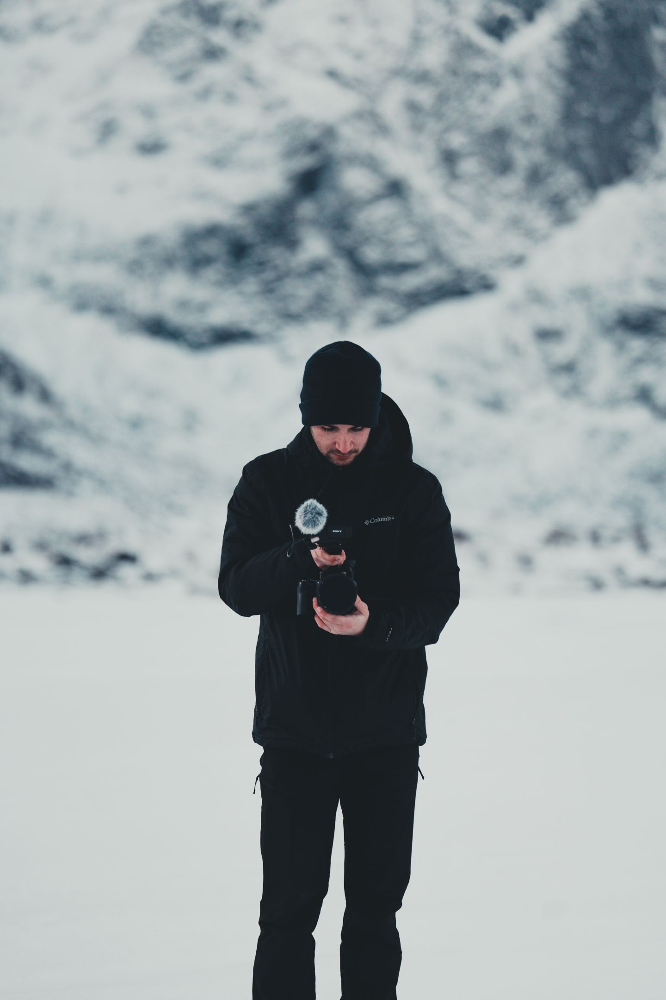

Filmmaker & Photographer
France 🇫🇷
Hello there! 👋🏻 I’m Antoine Cornière, a French 🇫🇷 Filmmaker & Photographer. I’m passionate about bringing stories to life through video, and I’m always experimenting with new ideas and techniques to make my work even better. For me, storytelling is all about connecting with people, sharing experiences, and sparking inspiration.
I love mixing different visual styles, from film to photography, to create something fresh and unique. Whether it’s through a beautiful shot or the way an edit flows, I believe in the power of storytelling to inspire and make people dream. My approach is all about creating smooth, seamless stories that feel natural and effortless, so the focus is always on the message, not the medium.